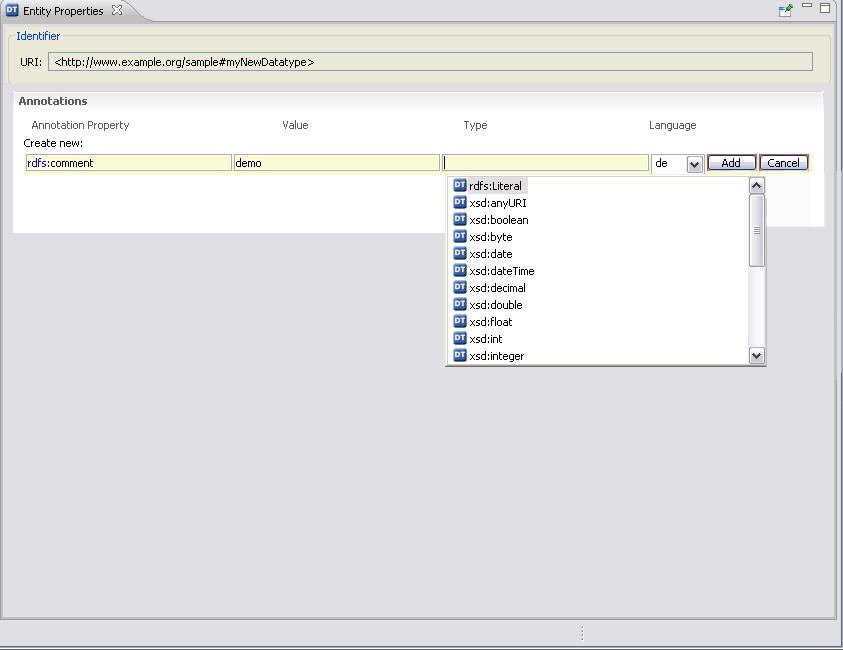

If an ontology uses other datatypes than those of the XML schema, they are listed in the Datatypes folder. These datatypes can be annotated (see below). For an overview of all XML Schema datatypes, please refer to XML Schema Part 2: Datatypes Second Edition at w3c.org.
Usually, annotations are used to add information to resources of the ontology. They contain useful information such as who is the creator or what are the readable labels and comments for single elements of the ontology.
For information on how to create an annotation, see Create an Annotation.
